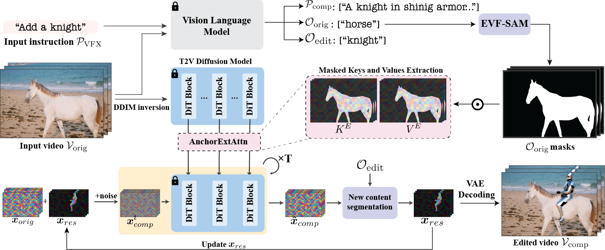

Method
Given an input video $\mathbf{V}_{orig}$ and a textual instruction $\mathbf{P}_{VFX}$, our goal is to synthesize a new video $\mathbf{V}_{VFX}$, in which new dynamic elements are seamlessly integrated to the existing scene.
Tackling this task requires ensuring that the generated content, such as new objects or effects, adheres to the dynamics of the existing scene. The location and size of the new content must align with the camera motion and the environment, while its actions and movements must appropriately respond to other dynamic objects present in the scene. Our framework addresses these challenges by incorporating the following key components:
VLM as a VFX assistant - We incorporate a Vision-Language model that we treat as ''a VFX assistant'' to interpret the user’s instructions, reason about the interactions with the scene's dynamics, and provide a descriptive prompt for the T2V based diffusion model.
Localization via Anchor Extended Attention - To steer the localization of the edit and make it content-aware, we propose to utilize Extended Attention during sampling from the T2V DiT model to a selection of keys and values corresponding to only specific positions in the original video that act as anchors points, allowing the generation to focus on essential elements for integration. localization is based on our observation that extending keys and values provides more than just global information, but each feature locally encodes corresponding patches in the video. regions
Content Harmonization via Iterative refinement - To guarantee precise pixel-level alignment we estimate a residual in the latent, which is added to the latent of the original video. We iteratively update the estimated residual latent by repeating the sampling process with AnchorExtAttn multiple times, progressively reducing the level of noise added at each step.

Given an input video $\mathbf{V}_{orig}$, we apply DDIM inversion and extract spatiotemporal keys and values $[\mathbf{K}_{orig}, \mathbf{V}_{orig}]$ from the original noisy latents. Given the user instruction $\mathbf{P}_{VFX}$ we instruct the VLM to envision the augmented scene and output the text edit prompt $\mathbf{P}_{comp}$, prominent object descriptions $\mathbf{O}_{orig}$ that are used to mask out the extracted keys and values and target object descriptions $\mathbf{O}_{edit}$. We estimate a residual ${x}_{res}$ to the original video latent ${x}_{{orig}}$. This is done by iteratively applying SDEdit with our Anchor Extended Attention, segmenting the target objects $(\mathbf{O}_{edit})$ from the clean result, and updating ${x}_{res}$ accordingly.